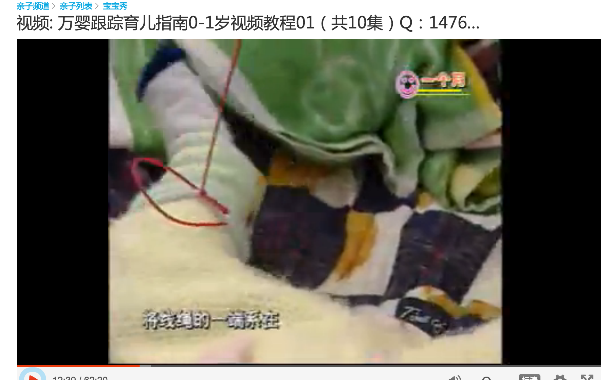

十年前
十年前第一次当爹的时候很是紧张。看到躺着家里床上的小普洱。真的是不知所措啊，甚至在他面前不知道是把手放在兜里好还是放在外面好。 在这种惴惴不安的心情下疯狂的补课，不停的在网上疯狂的搜索育儿相关的内容。很幸运我找到 《 万婴跟踪育儿指南 》。自从找到这个以后我就停止了在网上搜索育儿相关的内容，而是不停的将该视频中的内容用到我的平时的生活中。还养成了一个习惯：一旦听说谁家怀孕了，就向他们推荐这套视频。 我为什么这么推崇这套视频呢？不着急，听我慢慢说来。
万婴跟踪育儿指南是什么
该视频是我国已故早教专家区慕洁主持的由中国教育电视台出品的早教课程。该视频针对0~1周岁的婴儿每个月发育的不同特点以及敏感问题进行详细的讲解和训练。 就像一本菜谱(Cook book)一样, 告诉你在什么时间点孩子能具有什么样的能力，家长给孩子什么样的训练能让孩子的身体和智力得到更好的发展。
我为什么推崇他?
原因很简单： 就是他有效果，而且是看得见而且经过检验的效果！ 我在无意中做了一个对比试验。这个试验的内容是这样的：
- 试验对象:
- 普洱和小普洱15天的妹妹
- 试验时间:
- 在他们出生后的30天到40天
- 试验内容：
按照 万婴跟踪育儿指南 中的有线遥控的游戏给孩子手和脚用线绑上铃铛或其他颜色鲜艳的玩具，当他的手或脚动的时候。就会拉动铃铛的响或让玩具震动。 具体如下图所示：
由于我们两家居住环境的限制，无意中给普洱绑在了两只脚上，他妹妹就绑在了手上。
- 实验结果:
- 在他们一周岁的时候发现小妹妹的双手能够非常熟练的使用筷子和笔的时候。普洱在使用筷子和笔的时候都还是一把抓。而普洱的脚的灵活性又远胜于他的小妹妹。
通过这样的一个事情，使我相信这套视频对孩子的早期智力的训练是有很实在的效果的！ 所以在深夜写下以上的文字，希望准爸爸和妈妈们在孩子出生前能够看到这套视频，为孩子的成长提供帮助！